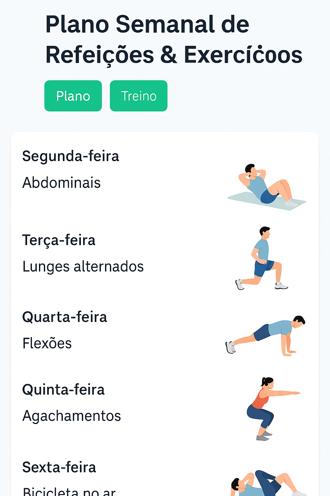

Segunda-feira – Full Body (Força)
Aquecimento: 5 minutos de bicicleta leve.

Agachamento com Halteres
3–4x12 rep.
Costas direitas, coxas paralelas ao chão.
3–4x12 rep.
Costas direitas, coxas paralelas ao chão.

Supino na Multigym
3–4x12 rep.
Empurrar até estender os braços, sem travar cotovelos.
3–4x12 rep.
Empurrar até estender os braços, sem travar cotovelos.

Remada Baixa
3–4x12 rep.
Puxar até à barriga, com ombros para trás.
3–4x12 rep.
Puxar até à barriga, com ombros para trás.

Elevação de Pernas no Chão
3x15 rep.
Levantar até 90°, sem arquear as costas.
3x15 rep.
Levantar até 90°, sem arquear as costas.

Bíceps Curl com Halteres
3x12 por braço.
Cotovelos fixos junto ao corpo.
3x12 por braço.
Cotovelos fixos junto ao corpo.
Terça-feira – HIIT + Peso Corporal
4 ciclos de 5 minutos:
- Sprint na Bicicleta: 2 min intensos (nível 7+)
- Agachamentos Rápidos: 1 min ritmo alto
- Flexões: 1 min (ajoelhado se necessário)
- Descanso: 1 min
Final: Alongamentos e respiração controlada.
Quarta-feira – Parte Superior

Puxada Frontal
3x12 rep.
Descer a barra até ao peito, cotovelos para baixo.
3x12 rep.
Descer a barra até ao peito, cotovelos para baixo.

Elevação Lateral com Halteres
3x10 rep.
Levantar até à altura dos ombros.
3x10 rep.
Levantar até à altura dos ombros.

Peck Deck
3x12 rep.
Movimento de abraço, com controlo.
3x12 rep.
Movimento de abraço, com controlo.

Tríceps Pushdown
3x12 rep.
Cotovelos junto ao tronco, estender até abaixo.
3x12 rep.
Cotovelos junto ao tronco, estender até abaixo.
Bíceps Alternado
3x10 por braço.
Alternar braços mantendo postura.
3x10 por braço.
Alternar braços mantendo postura.
Quinta-feira – Cardio Contínuo

45 min de bicicleta fixa a ritmo moderado.
Manter zona 2, respiração nasal sempre que possível.
Sexta-feira – Pernas + Core
Agachamento na Multigym
3x12 rep.
Manter tronco alinhado e carga controlada.
3x12 rep.
Manter tronco alinhado e carga controlada.

Peso Morto com Halteres
3x10 rep.
Descer halteres até meio da canela.
3x10 rep.
Descer halteres até meio da canela.
Extensão de Pernas
3x12 rep.
Subir até extensão total, sem travar articulações.
3x12 rep.
Subir até extensão total, sem travar articulações.

Prancha
3x30–45 seg.
Corpo alinhado, abdómen contraído.
3x30–45 seg.
Corpo alinhado, abdómen contraído.

Abdominal Bicicleta
3x20 rep.
Cotovelos cruzam até o joelho oposto.
3x20 rep.
Cotovelos cruzam até o joelho oposto.
Sábado – Atividade Leve
Caminhada 30–60 min ou sessão leve de alongamentos.
Domingo – Descanso
Recuperação: hidratação, sono e alimentação equilibrada.